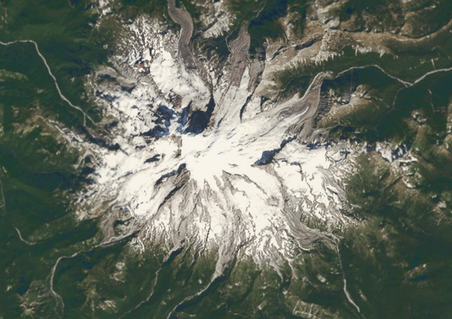
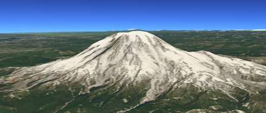

Altus employs a 3D model for both the planet and how it is viewed. There are a variety of ways to change the location being 'observed' in the map view.
A virtual camera is used to set and control the location and orientation of the observer. Therefore, in order to change locations you change the placement of the virtual camera. The camera has several other properties that can be set like altitude and field of view.
These properties can also be animated to make the camera smoothely move from one location to another, one orientation to another, or a a combination.
You can:
Under the hood, affine transformation matrices (transforms) are used as the mechanism for setting and updating the virtual camera location. This is because transformations can be easily composed (combined) and inverted. Therefore, setting the location or orientation of the camera involves creating and setting the camera's transform property.
As long as pitch is 90 degrees, and roll and yaw are 0, the view through the camera will always be looking down towards the centerpoint of the 3D sphere used to represent the planet at the point on the surface of that sphere directly beneath the camera. This gives the appearance of a 2D view of a map layer.
Here the camera is positioned over Mt. Ranier. North is up. The camera is pitch is 90 degrees. Positive pitch is down.
-><-
Here is the code for the camera placement:
/**Look down on Mt. Ranier*/
function lookDownAtMtRanier() {
var lat = 46.852; //Degrees latitude
var lon = -121.731; //Degrees longitude
var altitude = 41888; //Meters above sea level
var roll = 0; //Degrees (positive is clockwise)
var pitch = 90; //Degrees (positive is 'down')
var yaw = 0; //Degrees (positive is clockwise)
//Create a new position
var pos = new AltusUnified.GeographicPosition(lat, lon, altitude);
//Create a new orientation
var orientation = new AltusUnified.Orientation(0, 90, 0);
//Scale is needed to construct a transform, but not used by the camera
var scale = new AltusUnified.vec3d(1, 1, 1);
//Create a new transform
var trans = new AltusUnified.Transform(pos, orientation, scale);
//Set the camera's transform
AltusUnified.scene.camera().transform.set(trans);
//Clean up
pos.delete();
orientation.delete();
scale.delete();
}
If you change the pitch to anything other than 90 you are looking 'away' from the center of the planet at some angle. This is sometimes called "tilting" the view. This is useful when you have a 3D terrain layer or are displaying 3D models and their relationships to one another.
Here the camera is positioned to the south of Mt. Ranier. North is 'away' from the viewer. The camer pitch is horizontal (0 degrees).
-><-
Here is the code for the camera placement:
//Look horizontally at Mt. Ranier from a position south of it
function lookHorizontallyAtMtRanier() {
var lat = 46.630; //Degrees latitude
var lon = -121.756; //Degrees longitude
var altitude = 5131; //Meters above sea level
var roll = 0; //Degrees (positive is clockwise)
var pitch = 90; //Degrees (positive is 'down')
var yaw = 0; //Degrees (positive is clockwise)
//Create a new position
var pos = new AltusUnified.GeographicPosition(lat, lon, altitude);
//Create a new orientation
var orientation = new AltusUnified.Orientation(0, 0, 0);
//Scale is needed to construct a transform, but not used by the camera
var scale = new AltusUnified.vec3d(1, 1, 1);
//Create a new transform
var trans = new AltusUnified.Transform(pos, orientation, scale);
//Set the camera's transform
AltusUnified.scene.camera().transform.set(trans);
//Clean up
pos.delete();
orientation.delete();
scale.delete();
}
/*Set camera orientation using roll, pitch, and yaw
Note: We could also use transform.lookAt(vec3d worldPosition, vec3d up) without using roll pitch and yaw
*/
function setCameraOrientation(roll, pitch, yaw){
var pos = AltusUnified.scene.camera().transform.geographicPosition();
var orientation = new AltusUnified.Orientation(roll, pitch, yaw);
var scale = AltusUnified.scene.camera().transform.scale();
var trans = new AltusUnified.Transform(pos, orientation, scale);
AltusUnified.scene.camera().transform.set(trans);
trans.delete();
pos.delete();
orientation.delete();
scale.delete();
}
/**Set camera position*/
function setCameraPosition(lat, lon, altitude) {
var pos = new AltusUnified.GeographicPosition(lat, lon, altitude);
var orientation = new AltusUnified.Orientation(0, 90, 0);
var scale = new AltusUnified.vec3d(1, 1, 1);
var trans = new AltusUnified.Transform(pos, orientation, scale);
AltusUnified.scene.camera().transform.set(trans);
trans.delete();
pos.delete();
orientation.delete();
scale.delete();
};
/**Reset camera to over the U.S.*/
function resetCamera() {
setCameraPosition(39, -98, 10000000);
};
function lookAtUS() {
setCameraPosition(39, -98, 5000000);
}
AltusMappingEngine Web v2.0.ut.2153.g60764257e master
COPYRIGHT (C) 2017, BA3, LLC ALL RIGHTS RESERVED